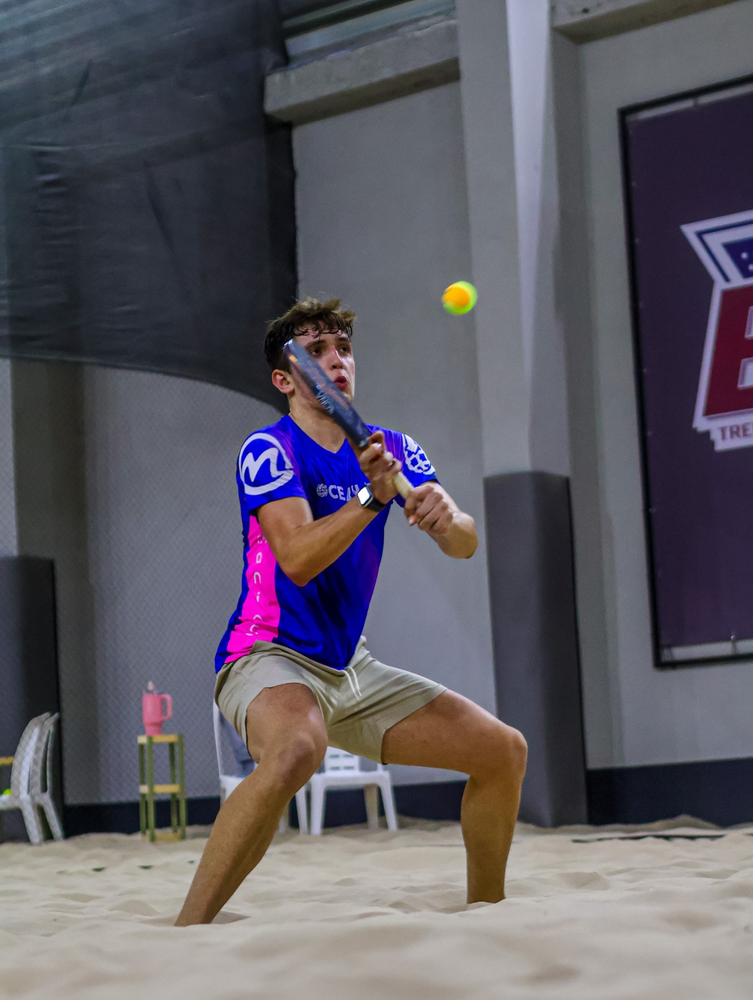
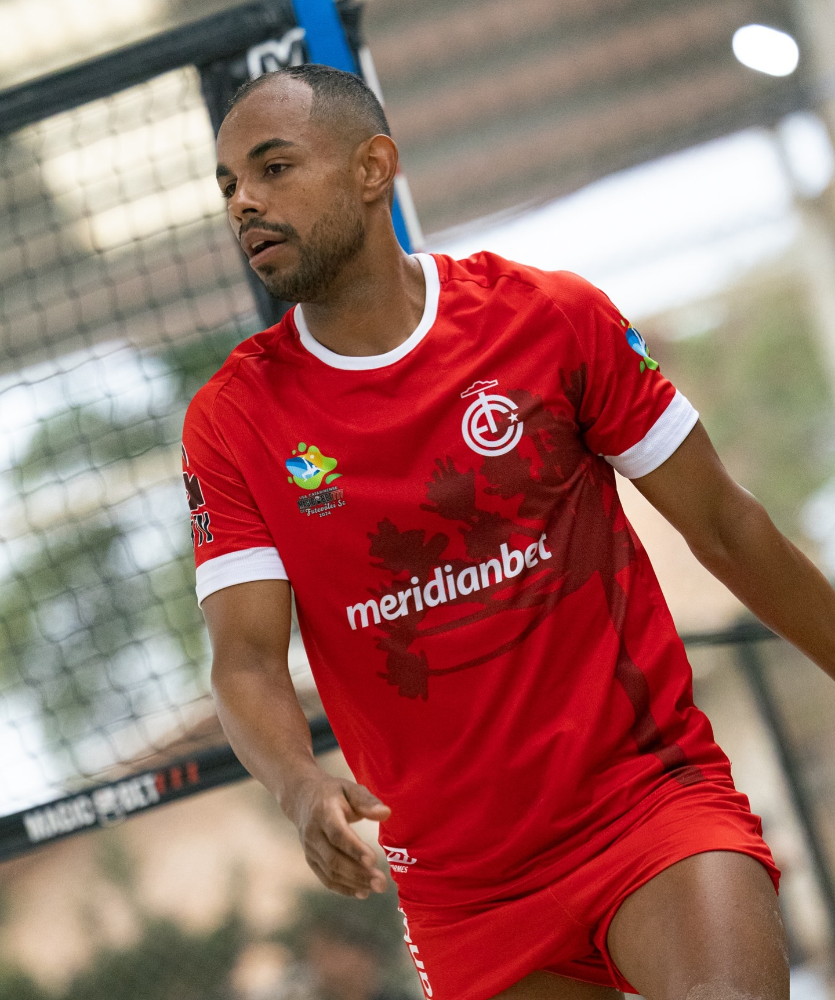
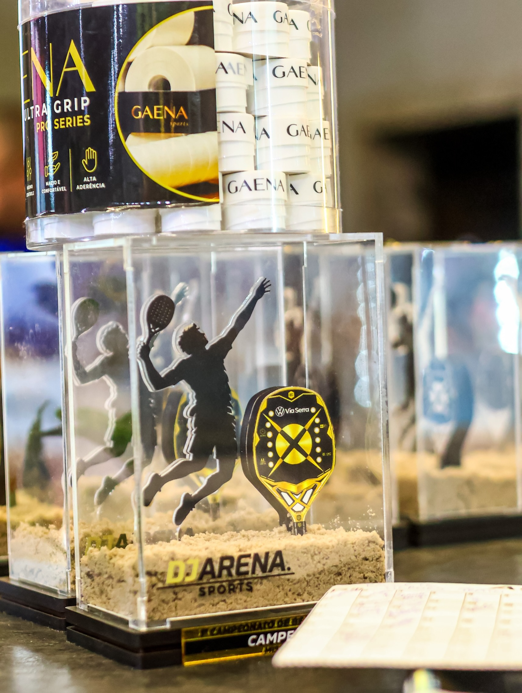
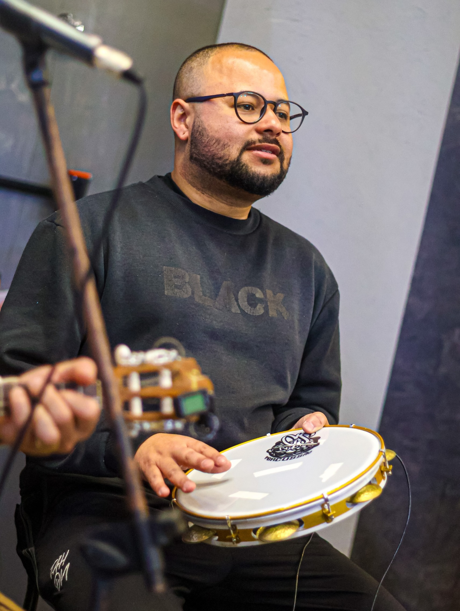
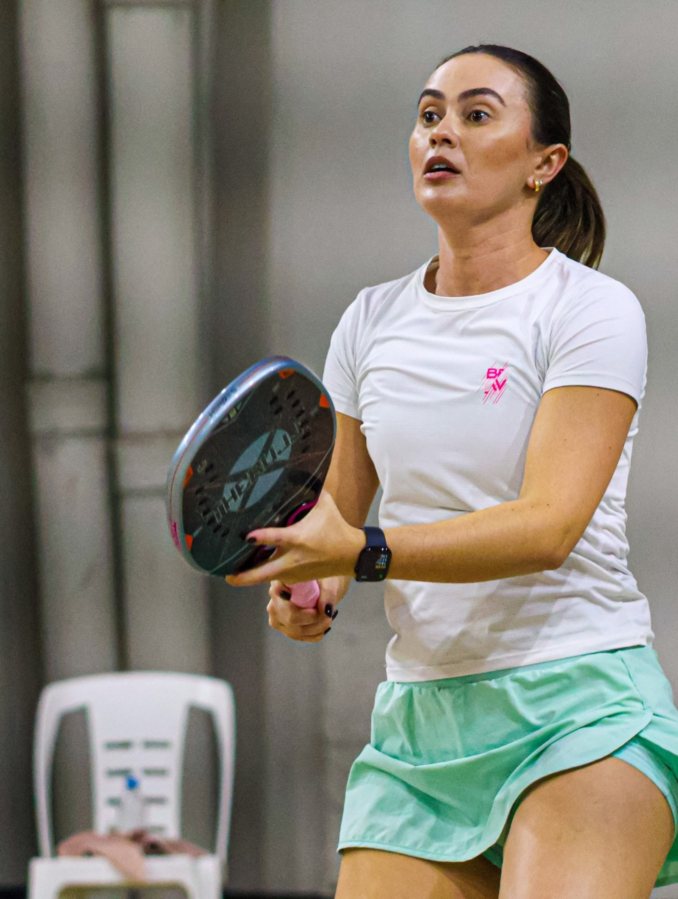
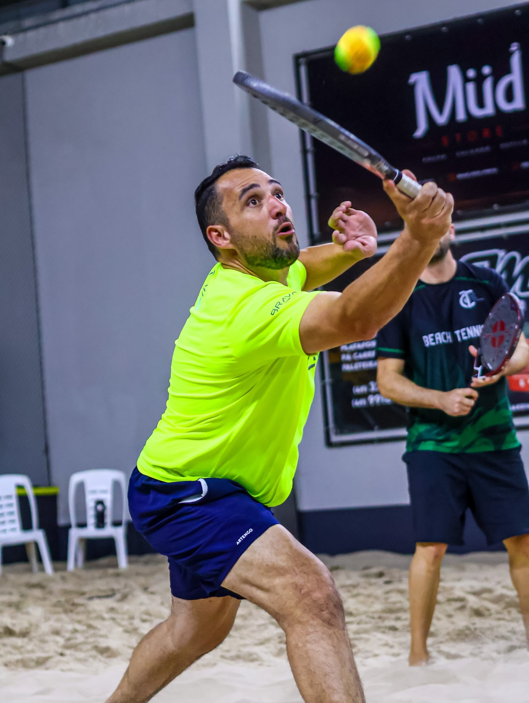

DJ ARENA
Aqui o pessoal vem treinar, jogar e competir. Futevôlei e Beach Tennis na areia, com campeonato todo mês.
Muito mais que quadras.
A DJ ARENA junta treino, jogo e campeonato no mesmo lugar. Quem curte Futevôlei e Beach Tennis encontra aqui gente da mesma vibe, partida entre amigos e competição todo mês.
A arena é do professor Djeymes, nome conhecido do Futevôlei na região.


Quem comanda a arena.
O professor Djeymes é referência no Futevôlei da região. Jogou futsal profissionalmente na França e no Brasil, tem uma carreira consolidada e leva tudo o que aprendeu para dentro da DJ ARENA.
Professor DjeymesTodo mês tem campeonato.
Todo mês tem campeonato ou evento na DJ ARENA. É dia de reunir atleta, amigo e quem gosta de esporte para competir e se divertir.
QUERO PARTICIPAR
Aqui todo mundo joga junto.
Treino, partida, campeonato e encontro. A DJ ARENA é onde o pessoal que gosta de areia se reúne.



Onde fica.
A DJ ARENA fica em Lages (SC). Toque no botão para abrir a localização exata no Google Maps e traçar a rota.
Bora jogar?
Escolha a modalidade, chame a turma e venha conhecer a arena.